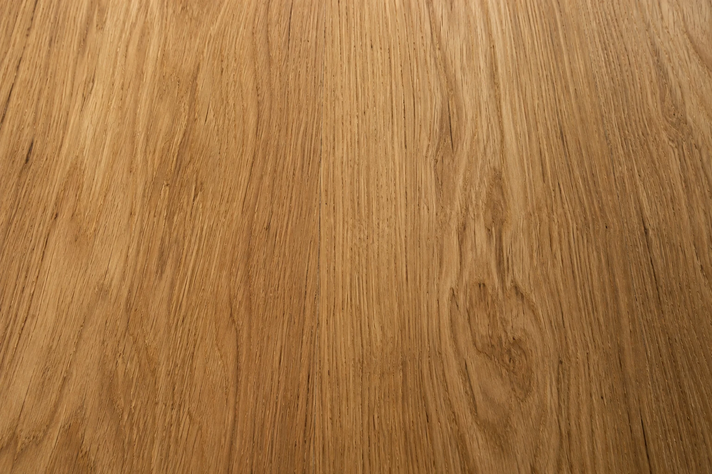
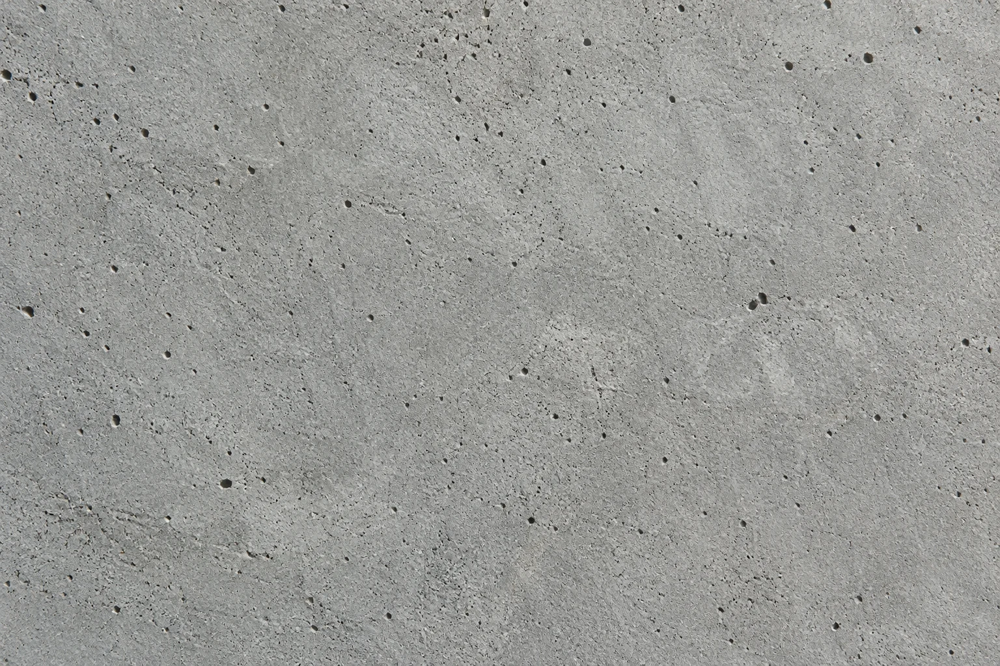
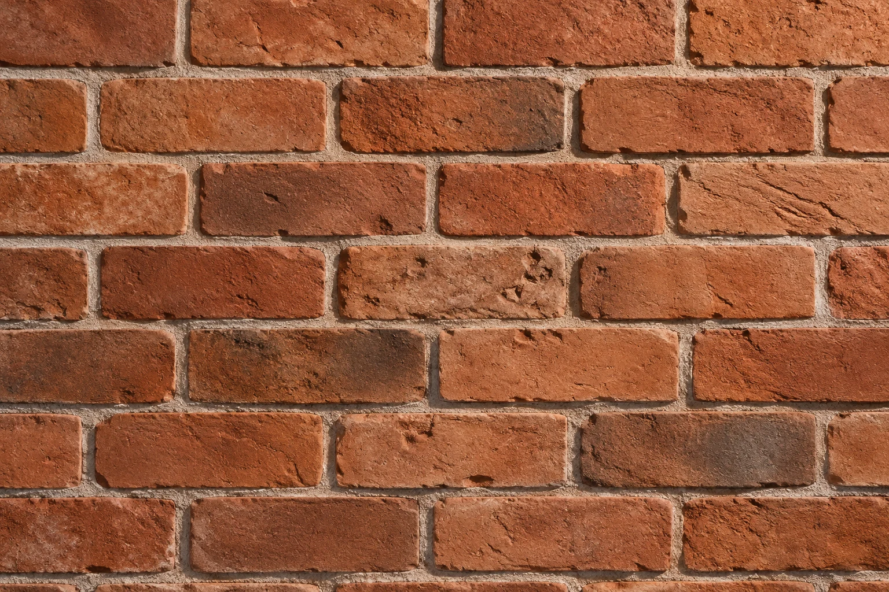
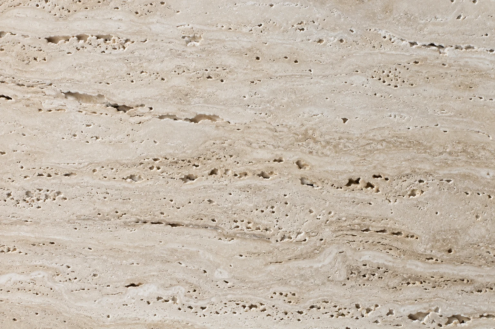
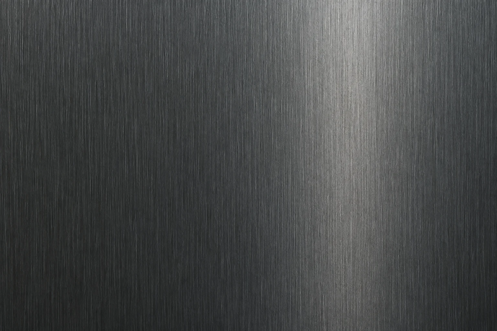
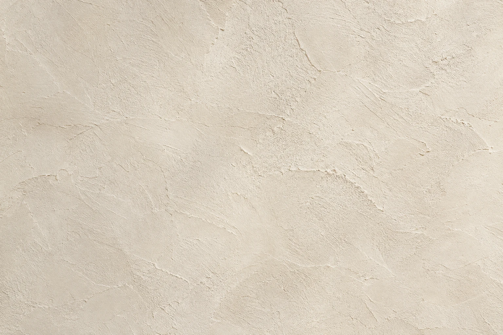
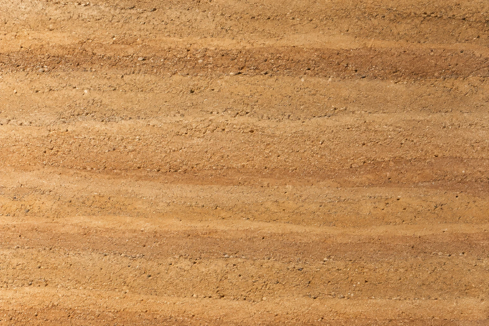
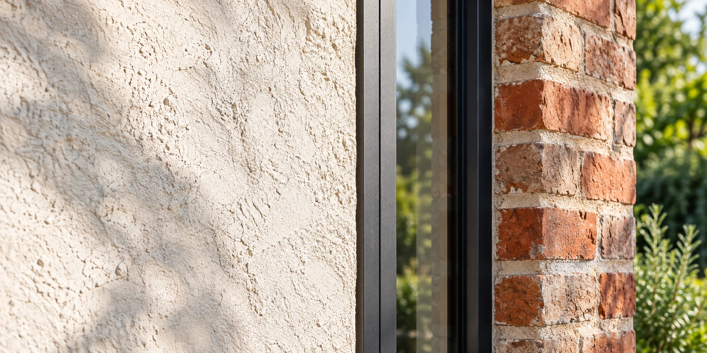

Le bois
Une matière chaleureuse pour la structure, le bardage ou les finitions.
Chêne clair, tonalités profondes, aspect brut ou finition soignée : définissez une ambiance avant de choisir l’essence et le traitement.
Un grain. Une nuance. Un relief.
La personnalité d’un lieu commence ici.
Faites défiler ou choisissez une matière pour la découvrir de plus près.
Explorer la palette






Chaleur & texture
Chêne clair, tonalités profondes, aspect brut ou finition soignée : définissez une ambiance avant de choisir l’essence et le traitement.
Une matière chaleureuse pour la structure, le bardage ou les finitions.
Chêne clair, tonalités profondes, aspect brut ou finition soignée : définissez une ambiance avant de choisir l’essence et le traitement.
Pour les fondations et les structures, avec une expression minérale.
Un rendu homogène, une surface texturée ou des lignes très nettes : chaque choix change la perception des volumes.
Un caractère familier, pour les murs comme pour les façades.
La teinte, le format et le dessin des joints composent ensemble le rythme d’une façade.
Des textures singulières, du parement aux détails de finition.
Des veines discrètes ou un relief plus présent peuvent guider une palette de couleurs et dialoguer avec les autres finitions.
Des lignes précises, au service de la structure et des détails.
Mat, satiné, clair ou sombre : l’aspect du métal peut souligner un cadre, une ouverture ou un détail.
Pour composer les cloisons, les plafonds et les surfaces intérieures.
Une surface claire et sobre laisse les volumes, le mobilier et les autres matières prendre leur place.
Des teintes naturelles et une mise en œuvre à étudier.
Les tons terreux invitent à construire une ambiance douce, avec des accords de bois, de pierre ou de métal.
Le site D-SIGN ouvre aussi la réflexion sur les nouveaux matériaux. Voici les pistes qu’il présente.
Une innovation n’est pas un choix automatique. Sa disponibilité et sa pertinence se précisent à l’échelle de chaque projet.
Le panorama D-SIGNDes panneaux de bois assemblés pour certaines applications structurelles.
Un mélange associant chanvre et liant minéral.
Un vitrage dont la teinte peut varier.
Des formulations visant à agir sur certaines fissures.
Un isolant particulièrement léger.
Un matériau intégrant des fibres pour transmettre la lumière.
Une piste de valorisation de déchets pour la couverture.
Des matériaux étudiés pour le stockage thermique.
Une piste de recherche pour de nouvelles propriétés.
Un matériau transformé, exploré en recherche.

Comment vivez-vous le lieu, aujourd’hui et demain ?
Quels accords de teintes, de textures et de lumière vous plaisent ?
L’existant, le budget et la mise en œuvre font partie de la discussion.
Parlons des matières qui donneront vie à votre projet.
Parlons de votre projet